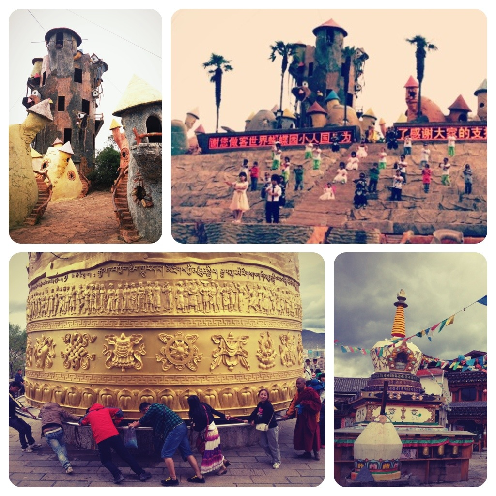

Tue, 03 Jul 2012 08:55:41 · china · yunnan · shangri-la · travel · wanderlust · dwarf · monks
after surviving a relatively uneventful 12 hour

After surviving a (relatively uneventful) 12 hour bus ride from Kunming, we arrived in Shangri-la (香格里拉) or formerly known as Zhongdian (中甸) greeted by pale grey sky and icy rain.
The ride on the sleeper bus was unexpectedly comfortable except for the occasional burst of wet socks odour; at some point it was so nauseated that I had to keep the window slightly open to allow some fresh air in.
I knew that going places with certain preconception was usually end with disappointment, and I should know better than doing so. Yet despite my low expectation on what I was hoping to see in Shangri-la, I was still disappointed. When the word Shangri-la was mentioned in my head I had this picturesque charming little village up in the mountains. After all this is the last major town before one going to the Himalayas (it lies in the border of Yunnan, Tibet and Sichuan province). Instead we found what better termed as ‘Tianzifang’ on steroids. And not even the good version of the charming Shanghai alleys either. This little town is just packed with so many trinket shops after another selling literally the same junks intended for fools who gladly part with their money. Not only that, the buildings and architecture were all new. Including, get this, the temple.
Frankly I see a little point of spending more than one night here. I think the name ‘Shangri-la’ is misleading, very typical touristy terms given by the government. This was not heaven on earth. And I’d be a little more cautious in recommending the place for others to visit. The surrounding areas, I was told were worth checking out. We shall see.
—
On a different note, just to recap our first day in Kunming, we went to the Dwarf Empire (小矮人国). No, seriously.
I was intrigued when Simon mentioned that there’s a Dwarf Empire (or little people, to be politically correct) somewhere in Kunming. Not one who likes the idea of visiting such places, I was nevertheless curious. Dwarfs in China?! - their absence in Shanghai and Beijing is most notable mainly because these two cities are the ‘showcase’ of good city by the government, hence no imperfection, especially one in form of imps and their likes, shall ruin the image.
Seeing The Dwarf Kingdom in person gave me a mixed feelings. Technically, it was a theme park that run and populated by dwarfs. I have to admit that they put together pretty interesting talent show. I was a bit unsure whether cheering them up would be taken as insults but since none of the audience were particularly excited I took it upon myself to cheer for them. After all, someone has to after all their efforts.
The show wasn’t too shabby either. Ranging from tight rope walking to hip hop dance and choir, one has to admit these little people know how to command the stage. Ain’t too shabby at all although I’m not sure if I care to repeat the experience though. I simply couldn’t shake the feelings whether going to see dwarfs in theme parks is something that I’d consider fun.